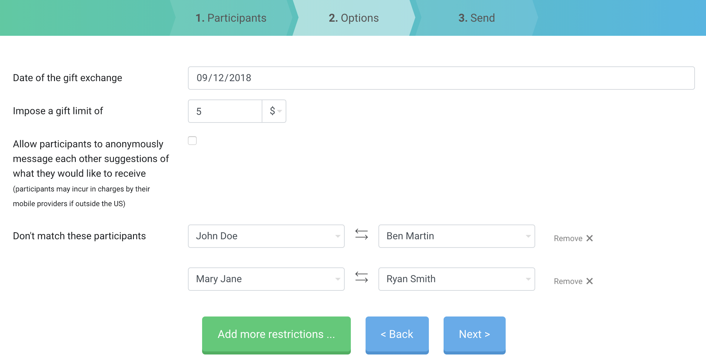
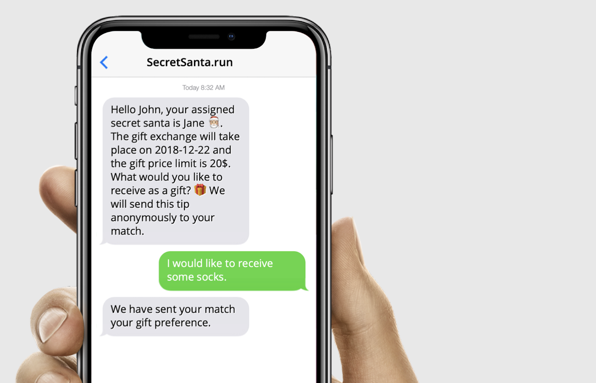
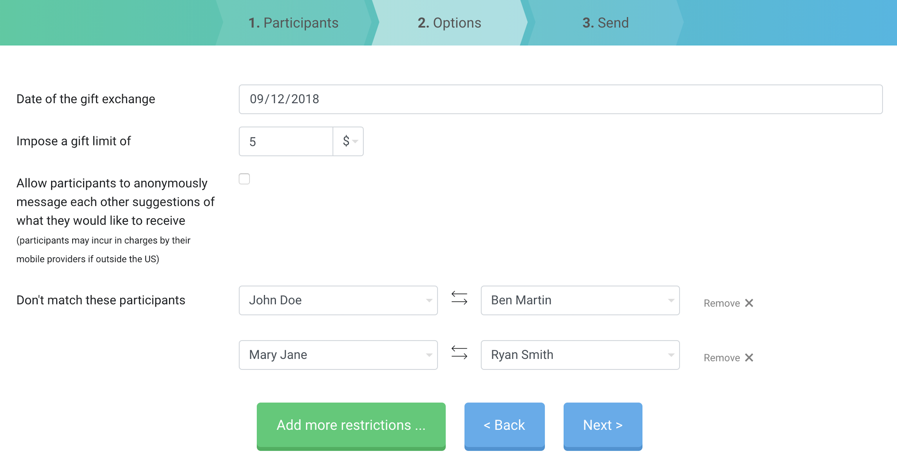
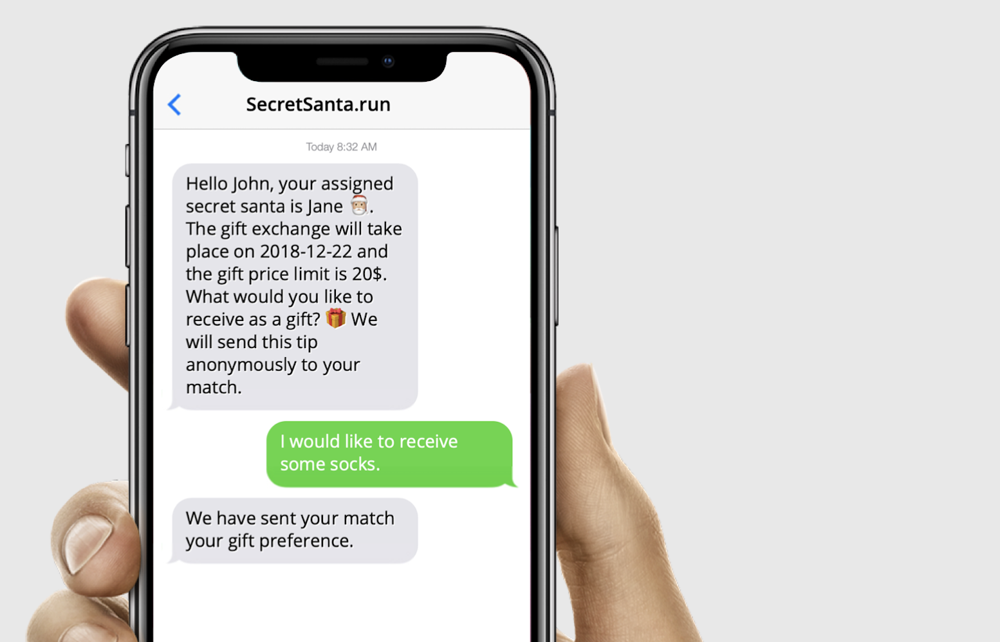

I developed this extension after struggling with having to remember which social network I used to login into websites. The first time you visit a website and login using a social authenticator (Facebook, Twitter, Google etc.) it registers the one you choose. When you visit the website again later on you can open the extension and it will tell you the social authenticator you have used before. If you click on 'Forget' it will forget your chosen social authenticator and you can now choose a different one, which the extension will register.
I have built this Secret Santa Generator because I wanted a better alternative. The alternatives I use always require me to know my friend's email addresses which is something I don't usually know. I built a web application where users can write down their friend's phone numbers and the app will message each person their match. Participants can then message back the app their gift preferences and the person that is responsible for gifting them will receive the message. This process doesn't require any sign up and the organizer of the event can download the matches as backup.
 



ViTFlow is a project that explores new ways to visualise data regarding populations and their activity. The visualizations available allow users to select a time range and see data referent to that period. These visualizations can also be overlapped to find correlations between events. Project developed by Diogo Redin and Diogo Vilela during a 2017 Summer Internship in M-ITI under the supervision of Nuno Jardim Nunes, Ph.D, Catia Prandi, Ph.D and Miguel Ribeiro, M.Sc.
I started coding 8+ years ago, doing WordPress theme development and selling premium themes. I got a Bachelor's in Computer Engineering from IST in 2019 (11st place in the US News EU Engineering universities ranking).